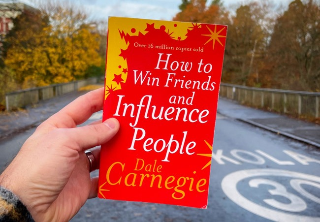

Anshul Nayak
Research
Publications
About
Blog
Tutorials
Books
Contact ↗
Anshul Nayak / Writing
Book notes
A collection of my book reviews and practical reading notes.
Atomic Habits
James Clear
Read the notes →

How to Win Friends and Influence People
Dale Carnegie
Read the notes →